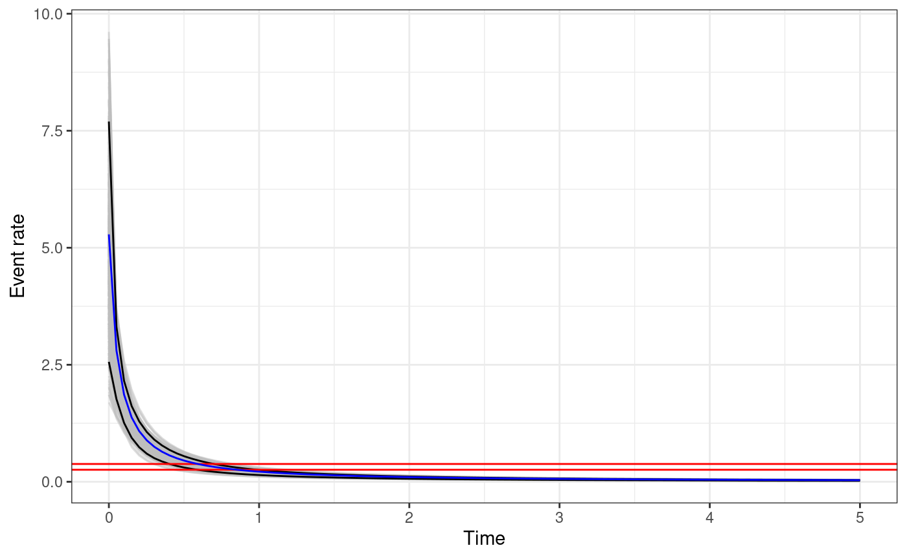
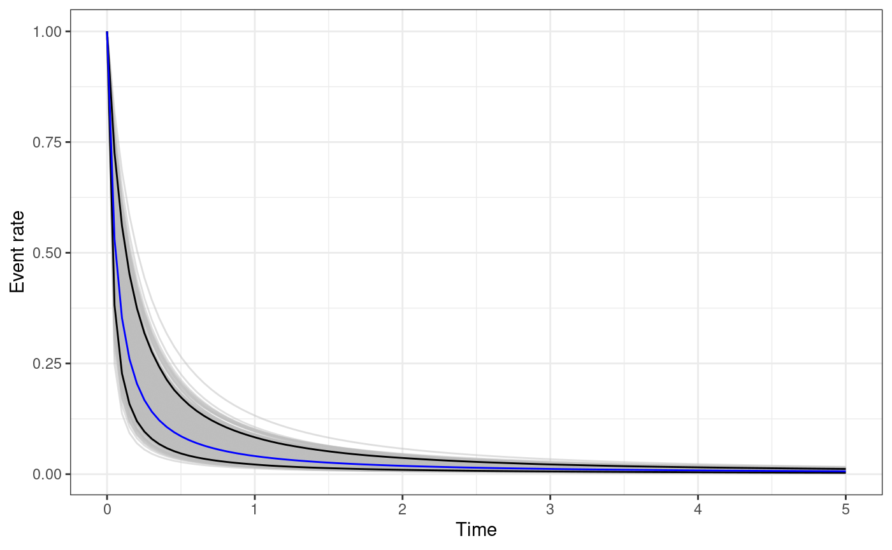
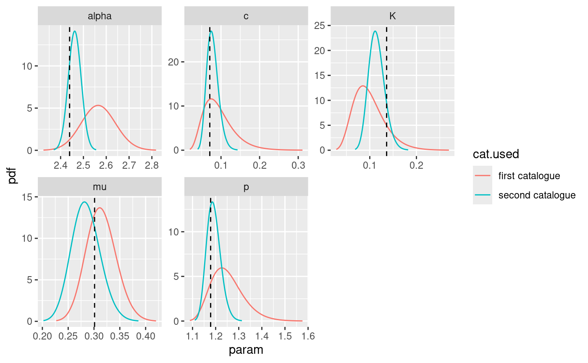

Tutorial on synthetic data
Francesco Serafini
2023-06-29
Source:vignettes/articles/tutorial_synth.Rmd
tutorial_synth.Rmd
library(ETAS.inlabru)
library(ggplot2)
# Increase num.threads if you have more cores on your computer
INLA::inla.setOption(num.threads = 2)Introduction
This tutorial shows how to use the ETAS.inlabru package
to generate a synthetic catalogue from a temporal ETAS model and how to
fit an ETAS model on this data. We also show how to retrieve the
posterior distribution of the parameters and other quantity of
interest.
For a brief introduction to the ETAS model we refer to the tutorial on real earthquake data.
Generate a synthetic catalogue
The function generate_temporal_ETAS_synthetic() can be
used to generate synthetic catalogues from a temporal ETAS model with
fixed parameters spanning a given interval of time. The
generate_temporal_ETAS_synthetic() takes as input
-
theta: alistof ETAS parameters with namesmu,K,alpha,c, andp, corresponding to the ETAS parameters. -
beta.p: the parameter of the magnitude distribution -
M0: cutoff magnitude, all the generated event will have magnitude greater thanM0. -
T1: starting time of the catalogue (the unit of measure depends on the unit used to fit the model). -
T2: end time of the catalogue (the unit of measure depends on the unit used to fit the model). -
Ht: set of known events. They can also be betweenT1andT2, this is useful when we want to generate catalogues with imposed events. If it isNULLno events are imposed.
The function returns a list of data.frame,
each element of the output list corresponds to a different
generation. The data.frame have three columns: occurence
time (ts), magnitude (magnitudes), a the
generation identifier (gen). The generation identifier uses
the following convention, \(-1\)
indicates the events in Ht with time between
T1 and T2, \(0\) indicates the first generation
offspring of the events with gen equal \(-1\), \(1\) indicates background events, \(2\) all the offspring of the events with
gen equal \(0\) or \(1\), \(3\)
indicates all the offspring of the events with gen equal
\(2\), \(4\) indicates all the offspring of the
events with gen equal \(3\), and so on. To obtain a unique
data.frame containing all the simulated events it is
sufficient to bind by rows all the generations.
The code below generates a synthetic catalogue of events with
magnitude greater than \(2.5\)
according to a temporal ETAS model with parameters equal to the vector
true.param. The value of the parameters is equal to the
posterior mean of the parameters obtained fitting a model on the
L’Aquila seismic sequence as it is done in the tutorial on real data.
Also the parameter \(\beta\) of the
magnitude distribution comes from the same example.
set.seed(111)
# set true ETAS parameters
true.param <- list(mu = 0.30106014, K = 0.13611399, alpha = 2.43945301, c = 0.07098607, p = 1.17838741)
# set magnitude distribution parameter
beta.p <- 2.353157
# set cutoff magnitude
M0 <- 2.5
# set starting time of the synthetic catalogue
T1 <- 0
# set end time of the synthetic catalogue
T2 <- 365
# generate the catalogue - it returns a list of data.frames
synth.cat.list <- generate_temporal_ETAS_synthetic(
theta = true.param,
beta.p = beta.p,
M0 = M0,
T1 = T1,
T2 = T2,
Ht = NULL,
ncore = 1
)The output of the function is a list of
data.frames and it is convenient to transform it in a
single data.frame binding the rows of the
data.frames in the list.
synth.cat.df <- do.call(rbind, synth.cat.list)
head(synth.cat.df)
#> ts magnitudes gen
#> 1 135.204031 2.661688 1
#> 2 187.947198 2.632073 1
#> 3 137.847074 3.073890 1
#> 4 152.693124 2.653628 1
#> 5 3.890113 2.686633 1
#> 6 194.287763 3.035756 1The synthetic catalogue is composed by a total of \(288\) events of which \(112\) are background events and \(176\) are aftershocks. We can easily
retrieve this numbers looking at the gen column of the
data.
c(N = nrow(synth.cat.df), N.bkg = sum(synth.cat.df$gen == 1), N.after = sum(synth.cat.df$gen > 1))
#> N N.bkg N.after
#> 288 112 176The code below is to plot the occurrence time of the events against
their magnitude with color indicating the generation of each event and
the time evolution cumulative number of events. The
multiplot function provided by the inlabru
R-package can be used to combine the plots.
pl1 <- ggplot(synth.cat.df, aes(ts, magnitudes, color = as.factor(gen))) +
geom_point() +
labs(color = "gen")
t.breaks <- T1:T2
N.cumsum <- vapply(t.breaks, \(x) sum(synth.cat.df$ts < x), 0)
df.to.cumsum.plot <- data.frame(ts = t.breaks, N.cum = N.cumsum)
pl2 <- ggplot(df.to.cumsum.plot, aes(ts, N.cum)) +
geom_line() +
ylab("cumulative number of events")
inlabru::multiplot(pl1, pl2, cols = 2)Prepare data for model fitting
In order to fit a model on the synthetic catalogue we need to
- set parameters priors
- set initial value of the parameters
- set
inlabruoptions - prepare the data for model fitting
To set the priors we need to create a list of copula transformation
(or simply link) functions. This is because our method works with an
internal representation of the parameters in which each parameter has a
Gaussian distribution. We need the function to transform the parameters
in the original ETAS scale and to set a prior for them. The
ETAS.inlabru package offers four different functions
corresponding to four different prior distributions. The functions are
gamma_t, unif_t, exp_t,
loggaus_t which corresponds to a Gamma distribution, a
Uniform distribution, an Exponential distribution and a Log-Gaussian
distribution. We also provide the inverse of this functions to retrieve
the value of the parameters in the internal scale given a value in the
ETAS scale. These are inv_gamma_t, inv_unif_t,
exp_t, and inv_loggaus_t.
For this example we are going to consider the following priors for the parameters
\[\begin{align*} \mu & \sim \Gamma(0.3, 0.6) \\ K & \sim \text{Unif}(0,10) \\ \alpha & \sim \text{Unif}(0,10) \\ c & \sim \text{Unif}(0,10) \\ p & \sim \text{Unif}(1,10) \end{align*}\]
To list of link functions corresponding to the above
priors is
# set copula transformations list
link.f <- list(
mu = \(x) gamma_t(x, 0.3, 0.6),
K = \(x) unif_t(x, 0, 10),
alpha = \(x) unif_t(x, 0, 10),
c_ = \(x) unif_t(x, 0, 10),
p = \(x) unif_t(x, 1, 10)
)The initial value of the parameters for the inlabru
algorithm must be specified in the internal scale of the parameters. For
this reason, it is useful to create a list of inverse link
functions so that we can specify the initial value of the parameters in
the ETAS scale and easily retrieve the corresponding value of the
parameters in the internal scale. This can be done as shown below
# set inverse copula transformations list
inv.link.f <- list(
mu = \(x) inv_gamma_t(x, 0.3, 0.6),
K = \(x) inv_unif_t(x, 0, 10),
alpha = \(x) inv_unif_t(x, 0, 10),
c_ = \(x) inv_unif_t(x, 0, 10),
p = \(x) inv_unif_t(x, 1, 10)
)The initial value of the parameters have to be specified as a
list with names th.mu, th.K,
th.alpha, th.c, and th.p, where,
for example, th.mu corresponds to the initial value of
parameter \(\mu\) in the internal
scale. The initial value of the parameters is important to ensure that
the algorithm will be able to converge. Indeed, if we start the
algorithm from values of the parameters causing numerical problems, we
may prevent the algorithm to converge. In our experience, setting the
initial values such that each parameter is not (e.g. \(< 10^{-5}\)) or (e.g. \(> 10^2\)) is a safe choice. The code
below uses the following initial values of the parameters \(\mu_{\text{init}} = 0.5, K_{\text{init}} = 0.1,
\alpha_{\text{init}} = 1, c_{\text{init}} = 0.1, p_{\text{init}} =
1.1\)
# set up list of initial values
th.init <- list(
th.mu = inv.link.f$mu(0.5),
th.K = inv.link.f$K(0.1),
th.alpha = inv.link.f$alpha(1),
th.c = inv.link.f$c_(0.1),
th.p = inv.link.f$p(1.1)
)Also the inlabru options have to be provided in a
list, the main elements of the list are:
-
bru_verbose: number indicating the type of visual output. Set it to 0 for no output. -
bru_max_iter: maximum number of iterations. If we do not setmax_steptheinlabrualgorithm stops when the stopping criterion is met. However, settingmax_stepto values smaller than 1 forces the algorithm to run for exactlybru_max_iteriterations. -
bru_method: for what is relevant here, the only thing that we may need to set is themax_stepargument. If the algorithm does not converge without fixing amax_stepthen we suggest to try to fix it to some value below 1, in our experience \(0.5\) or \(0.2\) works well. In the example below the line settingbru_methodis commented. -
bru_initial:listof initial values created before.
# set up list of bru options
bru.opt.list <- list(
bru_verbose = 3, # type of visual output
bru_max_iter = 70, # maximum number of iterations
# bru_method = list(max_step = 0.5),
bru_initial = th.init
) # parameters initial valuesLastly, we need to prepare the data from the model fitting. The data
must be provided as a data.frame with at least 3 columns
with names ts corresponding to the occurrence time of the
events, magnitudes corresponding to the magnitude, and
idx.p with an event identifier. The events in the
data.frame must be sorted with respect to the occurrence
time. The synthetic catalogue we have generated at the beginning already
has the columns ts and magnitudes, but it is
sorted by generation and not time. The code below sort the rows of the
data.frame and adds the event identifier
Model Fitting
The function Temporal.ETAS fit the ETAS model and
returns a bru object as output. The required inputs
are:
-
total.data:data.framecontaining the observed events. It have to be in the format described in the previous Section. -
M0: cutoff magnitude. All the events intotal.datamust have magnitude greater or equal to this number. -
T1: starting time of the time interval on which we want to fit the model. -
T2: end time of the time interval on which we want to fit the model. -
link.functions:listof copula transformation functions in the format described in previous sections. -
coef.t.,delta.t.,N.max.: parameters of the temporal binning. The binning strategy is described in Appendix B of the paper Approximation of Bayesian Hawkes process withinlabru. The parameters corresponds tocoef.t.\(=\delta\),delta.t.\(=\Delta\), andN.max.\(=n_{\max}\). -
bru.opt:listofinlabruoptions as described in the previous Section.
synth.fit <- Temporal.ETAS(
total.data = synth.cat.df,
M0 = M0,
T1 = T1,
T2 = T2,
link.functions = link.f,
coef.t. = 1,
delta.t. = 0.1,
N.max. = 5,
bru.opt = bru.opt.list
)
#> Start creating grid...
#> Finished creating grid, time 0.5635509Check marginal posterior distributions
In order to retrieve the marginal posterior distributions of the
parameter we need to provide a list containing two
elements: model.fit which is a bru object
containing the fitted model, and link.functions which is
the list of link functions created before.
# create input list to explore model output
input_list <- list(
model.fit = synth.fit,
link.functions = link.f
)Once the list has been created, the function
get_posterior_param returns the marginal posterior
distribution of the parameters in the ETAS scale. The function returns a
list with two elements: post.df is a
data.frame with three columns, x indicating
the value of the parameter, y indicating the corresponding
value of the marginal posterior distribution, and param
which is a parameter identifier. The output list also
contains post.plot which is a ggplot object
containing the plot of the marginal posterior distributions for each
parameter. The code below retrieve the marginal posterior distribution
of the parameters and plot them along with the true value of the
parameters represented by the vertical dashed lines.
# retrieve marginal posterior distributions
post.list <- get_posterior_param(input.list = input_list)
# create data.frame of true value of parameters
df.true.param <- data.frame(
x = unlist(true.param),
param = names(true.param)
)
# add to the marginal posterior distribution of the parameters the true value of the parameters.
post.list$post.plot +
geom_vline(
data = df.true.param,
mapping = aes(xintercept = x), linetype = 2
)Sampling the joint posterior distribution
The function post_sampling generate samples from the
joint posterior of ETAS parameters. The function takes in input:
-
input.list: a list with amodel.fitelement and alink.functionselements as described above. -
n.samp: number of posterior samples. -
max.batch: the number of posterior samples to be generated simultaneously. Ifn.samp\(>\)max.batch, then, the samples are generated in parallel in batches of maximum size equal tomax.batch. Default is \(1000\). -
ncore: number of cores to be used in parallel whenn.samp\(>\)max.batch.
The function returns a data.frame with columns
corresponding to the ETAS parameters
post.samp <- post_sampling(
input.list = input_list,
n.samp = 1000,
max.batch = 1000,
ncore = 1
)
head(post.samp)
#> mu K alpha c p
#> 1 0.3313594 0.06213181 2.622306 0.1370523 1.301888
#> 2 0.2944582 0.04940535 2.584373 0.1482548 1.236385
#> 3 0.3617445 0.05013471 2.501793 0.2749193 1.455744
#> 4 0.3461104 0.06513873 2.406373 0.2820508 1.446610
#> 5 0.2880405 0.03930956 2.585837 0.2202680 1.329543
#> 6 0.3142970 0.04254604 2.471594 0.3291435 1.393758The posterior samples can then be used to estimate the posterior distribution of functions of the parameters.
Triggering function and Omori law
Interesting functions of the parameters are the triggering function and the Omori law. We can estimate the posterior distribution of these functions using the samples from the joint posterior distribution of the parameters obtained in the previous section.
The functions triggering_fun_plot provides a plot of the
quantiles of the posterior distribution of the triggering function \(g(t-t_h, mh)\), namely,
\[ g(t - t_h, m_h) = K\exp\{\alpha(m_h - M_0)\}\left(\frac{t - t_h}{c} + 1\right)^{-p} \]
The function takes in input
-
input.list: the input list as defined for the functions used previously. -
post.samp: adata.frameof samples from the posterior distribution of the parameters. If it isNULL, thenn.sampsamples are generated from the posterior. -
n.samp: number of posterior samples of the parameters to be used or generated. -
magnitude: the magnitude of the event (\(m_h\)). -
t.end: the maximum value of \(t\) for the plot. -
n.breaks: the number of breaks in which the interval \((0, \texttt{t.end})\) is divided.
The function returns a ggplot object. For each sample of
the parameters the triggering function between \(0\) and t.end is calculated.
The black solid lines represents the \(95\%\) posterior interval of the function,
the grey lines represent the triggering function calculated with the
posterior samples, and the horizontal red lines represent the \(95\%\) posterior interval of the background
rate \(\mu\). The function
triggering_plot_prior does the same but using parameters
sampled from the priors of the parameters.
The code below creates the plot of the posterior of the triggering
function and adds the triggering function calculated with the true
parameter values in blue. We need to add the argument M0 to
the input_list to use the function
triggering_fun_plot.
# add cutoff magnitude to input_list
input_list$M0 <- M0
# generate triggering function plot
trig.plot <- triggering_fun_plot(
input.list = input_list,
post.samp = post.samp,
n.samp = NULL, magnitude = 4,
t.end = 5, n.breaks = 100
)
# set times at which calculate the true triggering function
t.breaks <- seq(1e-6, 5, length.out = 100)
# calculate the function
true.trig <- gt(unlist(true.param), t = t.breaks, th = 0, mh = 4, M0 = M0)
# store in data.frame for plotting
true.trig.df <- data.frame(ts = t.breaks, trig.fun = true.trig)
# add the true triggering function to the plot
trig.plot +
geom_line(
data = true.trig.df,
mapping = aes(x = ts, y = trig.fun), color = "blue"
)
The functions omori_plot_posterior does the same as the
function triggering_fun_plot but considering only
\[ \left(\frac{t- t_h}{c} + 1\right)^{-p} \] instead of the whole triggering function and without the background rate.
omori.plot <- omori_plot_posterior(input.list = input_list, post.samp = post.samp, n.samp = NULL, t.end = 5)
true.omori <- omori(theta = unlist(true.param), t = t.breaks, ti = 0)
true.omori.df <- data.frame(ts = t.breaks, omori.fun = true.omori)
omori.plot +
geom_line(
data = true.omori.df,
mapping = aes(x = ts, y = omori.fun), color = "blue"
)
Comparison between different fitted models
It is interesting to fit the model on multiple synthetic catalogues and compare the parameters posterior distributions obtained with different catalogues. In this section, we are going to generate a second synthetic catalogue, fit the model, and compare the posterior distributions with the ones obtained before. For the second catalogue we impose a large event with magnitude \(6\) happening in the midpoint of the time interval.
The first step is to set the data.frame of known events
and generate a second synthetic catalogue
# set up data.frame of imposed events
Ht.imposed <- data.frame(
ts = mean(c(T1, T2)),
magnitudes = 6
)
# generate second catalogue
set.seed(1)
synth.cat.list.2 <- generate_temporal_ETAS_synthetic(
theta = true.param,
beta.p = beta.p,
M0 = M0,
T1 = T1,
T2 = T2,
Ht = Ht.imposed,
ncore = 1
)
# transform it in a data.frame
synth.cat.df.2 <- do.call(rbind, synth.cat.list.2)Counting the number of background events and aftershocks in this case
is slightly different from before. In fact, we count the imposed event
as a background event, and the aftershocks need to include also the
event with gen = 0 which are the ones induced by the
imposed event which in this case are 192.
sum(synth.cat.df.2$gen == 0)
#> [1] 192Below the comparison between the number of events in the two catalogues. Notice that the background events are roughly the same which is expected given that the time interval is the same.
rbind(
first = c(
N = nrow(synth.cat.df),
N.bkg = sum(synth.cat.df$gen == 1),
N.after = sum(synth.cat.df$gen > 1)
),
second = c(
N = nrow(synth.cat.df.2),
N.bkg = sum(synth.cat.df.2$gen == 1 | synth.cat.df.2$gen == -1),
N.after = sum(synth.cat.df.2$gen > 1 | synth.cat.df.2$gen == 0)
)
)
#> N N.bkg N.after
#> first 288 112 176
#> second 408 104 304Then, we just need to set up the data.frame for model
fitting. For all the other inputs we can use the ones created for the
first model fit.
synth.cat.df.2 <- synth.cat.df.2[order(synth.cat.df.2$ts), ]
synth.cat.df.2$idx.p <- seq_len(nrow(synth.cat.df.2))
synth.fit.2 <- Temporal.ETAS(
total.data = synth.cat.df.2,
M0 = M0,
T1 = T1,
T2 = T2,
link.functions = link.f,
coef.t. = 1,
delta.t. = 0.1,
N.max. = 5,
bru.opt = bru.opt.list
)
#> Start creating grid...
#> Finished creating grid, time 0.9975915Now, to extract the marginal posterior distributions, we need to
create the input_list of the second model fit.
input_list.2 <- list(
model.fit = synth.fit.2,
link.functions = link.f
)Now, we can retrieve the marginal posterior distributions provided by the model fitted on the second catalogue and compare them with the ones obtained before.
# retrieve marginal posterior distributions
post.list.2 <- get_posterior_param(input.list = input_list.2)
# set model identifier
post.list$post.df$cat.used <- "first catalogue"
post.list.2$post.df$cat.used <- "second catalogue"
# bind marginal posterior data.frames
bind.post.df <- rbind(post.list$post.df, post.list.2$post.df)
# plot them
ggplot(bind.post.df, aes(x = x, y = y, color = cat.used)) +
geom_line() +
facet_wrap(facets = ~param, scales = "free") +
xlab("param") +
ylab("pdf") +
geom_vline(
data = df.true.param,
mapping = aes(xintercept = x), linetype = 2
)
The process shown here can be extended to multiple (\(>2\)) input catalogues in order to study if the parameters are identifiable. Also, using characteristics of the input catalogue as catalogue identifier we can study the change in the posterior distribution as the characteristic of the input catalogue changes. An interesting example is the number of events in the catalogue, and studying how the marginal posterior distributions change as we increase or decrease the number of events.